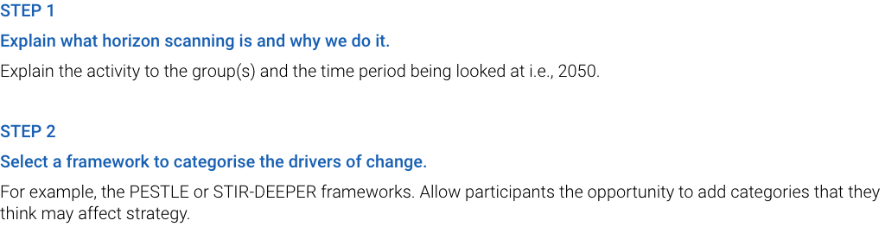
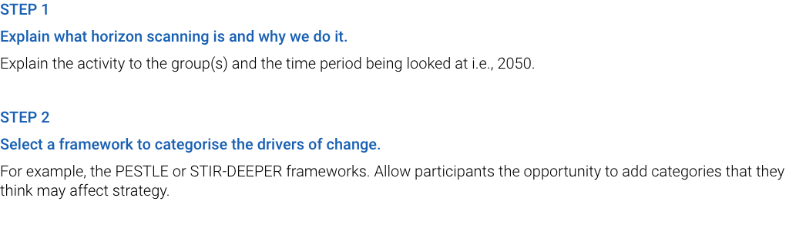

Processus consistant à repérer les premiers signes et indices du changement autour de soi, à cerner la nature de ces changements et à en déterminer les effets potentiels.
À utiliser comme un système d’alerte précoce interne, pourprocéder à une analyse systématique des risques, des possibilitéset des évolutions susceptibles d’affecter l’orientation stratégiqued’une organisation. Intégration possible aux processus de conception, de planification et d’élaboration des stratégies.
Transmet des signaux faibles ou forts nous permettant dedéceler l’émergence de risques, de possibilités ou de tendances. Ces informations peuvent servir de référence ou venir alimenter les évaluations du contexte, des tendances et des risques.


 
